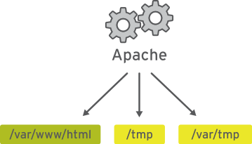
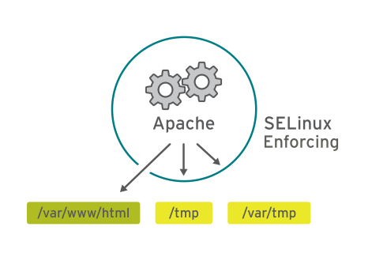
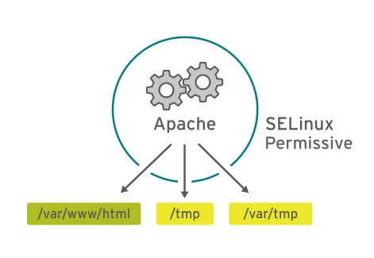

# ps axZ
LABEL PID TTY STAT TIME COMMAND
system_u:system_r:init_t:s0 1 ? Ss 0:09 /usr/lib/systemd/...
system_u:system_r:kernel_t:s0 2 ? S 0:00 [kthreadd]
system_u:system_r:kernel_t:s0 3 ? S 0:00 [ksoftirqd/0]
[... Output omitted ...]
# systemctl start httpd
# ps -ZC httpd
LABEL PID TTY TIME CMD
system_u:system_r:httpd_t:s0 1608 ? 00:00:05 httpd
system_u:system_r:httpd_t:s0 1609 ? 00:00:00 httpd
[... Output omitted ...]
# ls -Z /home
drwx------. root root system_u:object_r:lost_found_t:s0 lost+found
drwx------. student student unconfined_u:object_r:user_home_dir_t:s0 student
drwx------. visitor visitor unconfined_u:object_r:user_home_dir_t:s0 visitor
# ls -Z /var/www
drwxr-xr-x. root root system_u:object_r:httpd_sys_script_exec_t:s0 cgi-bin
drwxr-xr-x. root root system_u:object_r:httpd_sys_content_t:s0 error
drwxr-xr-x. root root system_u:object_r:httpd_sys_content_t:s0 html
drwxr-xr-x. root root system_u:object_r:httpd_sys_content_t:s0 iconsSecurity Enhanced Linux (SELinux)
Table of Contents
基本概念
什么是 SELinux
Security Enhanced Linux (SELinux) 是一个额外的系统安全层。SELinux 的主要目标是防止已遭泄露的系统服务访问用户数据。大多数 Linux 管理员都熟悉标准的用户/组/其他权限安全模型。这种基于用户和组的模型称为自由决定的访问控制。SELinux 提供另一层安全，它基于对象并由更加复杂的规则控制，称为强制访问控制。
Apache 服务有无 SELinux 保护对照
没有 SELinux 保护的 Apache 服务

具有 SELinux 保护的 Apache 服务

要允许远程匿名访问 Web 服务器，必须打开防火墙端口。然而，恶意人员却有机会通过安全漏洞侵入系统，而且如果他们破坏 Web 服务器进程，还会取得其权限，即 apache 用户和 apache 组的权限。该用户/组具有对文档根目录 (/var/www/html) 等项目的读取权限，以及对 /tmp、/var/tmp 和所有人均可编写的任何其他文件/目录的写入权限。
SELinux 上下文
SELinux 是用于确定哪个进程可以访问哪些文件、目录和端口的一组安全规则。每个文件、进程和端口都具有特别的安全标签，称为 SELinux 上下文。上下文是一个名称，SELinux 策略使用它来确定某个进程能否访问文件、目录或端口。除非显式规则授予访问权限，否则，在默认情况下，策略不允许任何交互。如果没有允许规则，则不允许访问。
SELinux 标签具有多种上下文：用户、角色、类型和敏感度。目标策略（即 Red Hat Enterprise Linux 中启用的默认策略）会根据第三个上下文（即类型上下文）来制定自己的规则。类型上下文名称通常以 _t 结尾。Web 服务器的类型上下文是 httpd_t。通常位于 /var/www/html 中的文件和目录的类型上下文是 httpd_sys_content_t。通常位于 /tmp 和 /var/tmp 中的文件和目录的类型上下文是 tmp_t。Web 服务器端口的类型上下文是 http_port_t。
存在某个策略规则，其允许 Apache（作为 httpd_t 运行的 Web 服务器进程）访问上下文通常位于 /var/www/html 及其他 Web 服务器目录 (httpd_sys_content_t) 中的文件和目录。对于通常位于 /tmp 和 /var/tmp 中的文件，策略中没有允许规则，因此不允许进行访问。有了 SELinux，恶意用户就无法访问 /tmp 目录。SELinux 还有适用于 NFS 和 CIFS 等远程文件系统的规则，尽管这些文件系统上的所有文件都使用相同的上下文标签。
-Z 设置 SELinux 上下文
许多处理文件的命令具有一个用于显示或设置 SELinux 上下文的选项（通常是-Z）。例如， ps、ls、cp 和 mkdir 全都使用 -Z 选项来显示或设置 SELinux 上下文。
SELinux 三种模式
| 模式 | 示例 | 说明 |
|---|---|---|
强制模式(Enforcing) |
|
在强制模式中，SELinux 主动拒绝访问尝试读取类型上下文为 tmp_t 的文件的 Web 服务器。在强制模式中，SELinux 不仅记录而且提供保护。 |
许可模式(Permissive) |
 |
许可模式通常用于对问题进行故障排除。在许可模式中，即使没有显式规则，SELinux 也会允许所有交互，而且会记录它在强制模式中拒绝的那些交互。可使用此模式来暂时允许访问 SELinux 正在限制的内容。无需重新启动即可在强制模式和许可模式之间相互转换。 |
禁用模式（Disabled） |
禁用模式会完全禁用 SELinux。需要重新启动系统才能彻底禁用 SELinux，或是从禁用模式转为强制模式或许可模式。若出于故障排除目的，可使用 SELinux 模式暂时禁用 SELinux 保护。 |
|
Note
|
最好使用许可模式，而不是彻底关闭 SELinux。原因之一在于即使在许可模式中，内核也将根据需要自动维护 SELinux 文件系统标签，从而避免为了启用 SELinux 而重启系统时，重新标记文件系统所带来的昂贵费用。 |
要显示当前使用的有效 SELinux 模式
# getenforce
EnforcingSELinux 布尔值
SELinux 布尔值是更改 SELinux 策略行为的开关。SELinux 布尔值是可以启用或禁用的规则。安全管理员可以使用 SELinux 布尔值来有选择地调整策略。
getsebool 命令用于显示 SELinux 布尔值及其当前值。-a 选项可使此命令列出所有布尔值。
# getsebool -a
abrt_anon_write --> off
abrt_handle_event --> off
abrt_upload_watch_anon_write --> on
antivirus_can_scan_system --> off
antivirus_use_jit --> off
auditadm_exec_content --> on
authlogin_nsswitch_use_ldap --> off
...修改 SELinux 模式
修改当前的 SELinux 模式
setenforce 命令修改当前的 SELinux 模式：
# getenforce
Enforcing
# setenforce
usage: setenforce [ Enforcing | Permissive | 1 | 0 ]
# setenforce 0
# getenforce
Permissive
# setenforce Enforcing
# getenforce
Enforcing暂时性设置 SELinux 模式的另一种做法是在启动时将参数传递给内核。传递内核参数 enforcing=0 会使系统在启动时进入许可模式。值 1 将指定强制模式。可在指定 selinux=0 参数时禁用 SELinux。值 1 将启用 SELinux。
设置默认 SELinux 模式
确定在启动时使用哪种 SELinux 模式的配置文件是 /etc/selinux/config。请注意，该文件包含一些有用的注释：
# This file controls the state of SELinux on the system.
# SELINUX= can take one of these three values:
# enforcing - SELinux security policy is enforced.
# permissive - SELinux prints warnings instead of enforcing.
# disabled - No SELinux policy is loaded.
SELINUX=enforcing
# SELINUXTYPE= can take one of these two values:
# targeted - Targeted processes are protected,
# minimum - Modification of targeted policy. Only selected processes
# are protected.
# mls - Multi Level Security protection.
SELINUXTYPE=targeted使用 /etc/selinux/config 更改启动时的默认 SELinux 模式。在上述示例中，它被设置为强制模式。
传递 selinux= 和/或 enforcing= 内核参数会覆盖在/etc/selinux/config 中指定的任何默认值。
修改 SELinux 模式一般步骤
1 - 查看默认 SELinux 的模式
# getenforce
Enforcing2 - 修改默认 SELinux 的模式为 Permissive，并重起使生效
# vim /etc/sysconfig/selinux
# grep '^SELINUX' /etc/selinux/config
SELINUX=permissive
SELINUXTYPE=targeted
# reboot3 - 查看 SELinux Permissive 模式是否生效
# getenforce
Permissive4 - 修改默认 SELinux 模式为 Enforcing
# vim /etc/sysconfig/selinux
# grep '^SELINUX' /etc/selinux/config
SELINUX=enforcing
SELINUXTYPE=targeted5 - 修改当前 SELinux 模式为 Enforcing
# setenforce 1
# getenforce
Enforcing修改 SELinux 上下文
初始 SELinux 上下文
通常，文件父目录的 SELinux 上下文决定该文件的初始 SELinux 上下文。父目录的上下文会分配给新建文件。这适用于 vim、cp 和 touch 等命令。但是，如果文件是在其他位置创建并且权限得以保留（如使用 mv 或 cp -a），那么原始 SELinux 上下文将不会发生更改。
# ls -Zd /var/www/html/
drwxr-xr-x. root root system_u:object_r:httpd_sys_content_t:s0 /var/www/html/
# touch /var/www/html/index.html
# ls -Z /var/www/html/index.html
-rw-r--r--. root root unconfined_u:object_r:httpd_sys_content_t:s0 /var/www/html/index.html修改文件的 SELinux 上下文
可使用两个命令来更改文件的 SELinux 上下文：chcon 和 restorecon。
-
chcon命令将文件的上下文更改成已指定为该命令参数的上下文。-t 选项经常只用于指定上下文的类型。 -
restorecon命令是更改文件或目录的 SELinux 上下文的首选方法。不同于chcon，在使用此命令时，不会明确指定上下文。它使用 SELinux 策略中的规则来确定应该是哪种文件上下文。
# mkdir /virtual
# ls -Zd /virtual/
drwxr-xr-x. root root unconfined_u:object_r:default_t:s0 /virtual/
# chcon -t httpd_sys_content_t /virtual
# ls -Zd /virtual/
drwxr-xr-x. root root unconfined_u:object_r:httpd_sys_content_t:s0 /virtual/
# restorecon -v /virtual
restorecon reset /virtual context unconfined_u:object_r:httpd_sys_content_t:s0->unconfined_u:object_r:default_t:s0
# ls -Zd /virtual/
drwxr-xr-x. root root unconfined_u:object_r:default_t:s0 /virtual/定义 SELinux 默认文件上下文规则
semanage fcontext 命令可用于显示或修改 SELinux 默认文件上下文规则，restorecon 命令用来设置默认文件上下文的规则。它使用扩展正则表达式来指定路径和文件名。fcontext 规则中最常用的扩展正则表达式是 (/.*)?，这意味着：“（可选）匹配 / 后跟任意数量的字符”。它将会匹配在表达式前面列出的目录并递归地匹配该目录中的所有内容。
restorecon 命令是 policycoreutil 软件包的一部分；semanage 是 policycoreutil-python 软件包的一部分。
semanage 设定规则
# touch /tmp/file1 /tmp/file2
# ls -Z /tmp/file*
-rw-r--r--. root root unconfined_u:object_r:user_tmp_t:s0 /tmp/file1
-rw-r--r--. root root unconfined_u:object_r:user_tmp_t:s0 /tmp/file2
# mv /tmp/file1 /var/www/html/
# cp /tmp/file2 /var/www/html/
# ls -Z /var/www/html/file*
-rw-r--r--. root root unconfined_u:object_r:user_tmp_t:s0 /var/www/html/file1
-rw-r--r--. root root unconfined_u:object_r:httpd_sys_content_t:s0 /var/www/html/file2
# semanage fcontext -l
# restorecon -Rv /var/www/
restorecon reset /var/www/html/file1 context unconfined_u:object_r:user_tmp_t:s0->unconfined_u:object_r:httpd_sys_content_t:s0
# ls -Z /var/www/html/file*
-rw-r--r--. root root unconfined_u:object_r:httpd_sys_content_t:s0 /var/www/html/file1
-rw-r--r--. root root unconfined_u:object_r:httpd_sys_content_t:s0 /var/www/html/file2semanage 设定规则
# mkdir /virtual
# touch /virtual/index.html
# ls -Zd /virtual/
drwxr-xr-x. root root unconfined_u:object_r:default_t:s0 /virtual/
# ls -Z /virtual/
-rw-r--r--. root root unconfined_u:object_r:default_t:s0 index.html
# semanage fcontext -a -t httpd_sys_content_t '/virtual(/.*)?'
# restorecon -RFvv /virtual
restorecon reset /virtual context unconfined_u:object_r:default_t:s0->system_u:object_r:httpd_sys_content_t:s0
restorecon reset /virtual/index.html context unconfined_u:object_r:default_t:s0->system_u:object_r:httpd_sys_content_t:s0
# ls -Zd /virtual/
drwxr-xr-x. root root system_u:object_r:httpd_sys_content_t:s0 /virtual/
# ls -Z /virtual/
-rw-r--r--. root root system_u:object_r:httpd_sys_content_t:s0 index.html自定义 httpd web 目录
1 - 配置 Apache 的站点目录，不使用默认的根目录
# mkdir /custom
# echo 'This is server0.' > /custom/index.html
# vim /etc/httpd/conf/httpd.conf
# grep custom /etc/httpd/conf/httpd.conf
DocumentRoot "/custom"
<Directory "/custom">2 - 启动 httpd
# systemctl restart httpd3 - 访问 http://localhost/index.html
# curl http://localhost/index.html
<!DOCTYPE HTML PUBLIC "-//IETF//DTD HTML 2.0//EN">
<html><head>
<title>403 Forbidden</title>
</head><body>
<h1>Forbidden</h1>
<p>You don't have permission to access /index.html
on this server.</p>
</body></html>4 - 定义一个 SELinux 文件上下文规则，以便将 /custom 及其目录中所有文件的上下文类型设置为 httpd_sys_content_t
# semanage fcontext -a -t httpd_sys_content_t '/custom(/.*)?'5 - 使用 restorecon 更改它们的上下文
# restorecon -Rv /custom
restorecon reset /custom context unconfined_u:object_r:default_t:s0->unconfined_u:object_r:httpd_sys_content_t:s0
restorecon reset /custom/index.html context unconfined_u:object_r:default_t:s0->unconfined_u:object_r:httpd_sys_content_t:s06 - 访问 http://localhost/index.html
# curl http://localhost/index.html
This is server0.修改 SELinux 布尔值
SELinux 布尔值是更改 SELinux 策略行为的开关。SELinux 布尔值是可以启用或禁用的规则。安全管理员可以使用 SELinux 布尔值来有选择地调整策略。
selinux-policy-devel 软件包提供多个手册页（即 *_selinux(8)），可用于解释不用服务的布尔值的含义。如果已安装此软件包，则 man -k '_selinux' 命令会列出这些文档。
-
getsebool命令用于显示 SELinux 布尔值 -
setsebool用于修改 SELinux 布尔值。 -
setsebool -P修改 SELinux 策略，并使修改永久保留。 -
semanage boolean -l将显示布尔值是否为永久值，并提供该布尔值的简短描述。
# getsebool -a
# getsebool httpd_enable_homedirs
httpd_enable_homedirs --> off
# setsebool httpd_enable_homedirs on
# semanage boolean -l | grep httpd_enable_homedirs
httpd_enable_homedirs (on , off) Allow httpd to enable homedirs
# getsebool httpd_enable_homedirs
httpd_enable_homedirs --> on
# setsebool -P httpd_enable_homedirs on
# semanage boolean -l | grep httpd_enable_homedirs
httpd_enable_homedirs (on , on) Allow httpd to enable homedirs要仅列出经过本地修改的的SELinux布尔值状态（与策略中默认值不同的任何设置），可使用命令 semanage boolean -l -C。
# semanage boolean -l -C
SELinux boolean State Default Description
httpd_enable_homedirs (on , on) Allow httpd to enable homedirsApache 访问用户主目录
Apache 可以发布在用户主目录中托管的 Web 内容，但是 SELinux 默认阻止此操作。本部分万平米将对允许 Apache 访问用户主目录，通过修改 SELinux 布尔值来进行调整或修改。
1 - 启用允许用户从其主目录发布 Web 内容的 Apache 功能。编辑 /etc/httpd/conf.d/userdir.conf 配置文件并使用 UserDir 指令更改行，内容如下
# vim /etc/httpd/conf.d/userdir.conf
# grep '^ *UserDir' /etc/httpd/conf.d/userdir.conf
UserDir public_html2 - 重启 Apache Web 服务器，以使更改生效
# systemctl restart httpd.service && systemctl status httpd.service3 - 在 student 用户下，创建一些会从用户主目录发布的 Web 内容
$ mkdir ~/public_html
$ echo 'This is student content on server0.' > ~/public_html/index.html
$ chmod 711 ~4 - 测试访问
$ curl http://localhost/~student/index.html|
Note
|
您将会得到一个错误消息，提示您不具有访问该文件的权限。 |
5 - 使用 getsebool 命令查看是否存在任何限制访问主目录的布尔值
$ getsebool -a | grep home
httpd_enable_homedirs --> off6 - 使用 setsebool 永久启用对主目录的访问权限
# setsebool -P httpd_enable_homedirs on7 - 测试访问
# curl http://localhost/~student/index.html
This is student content on server0.SELinux 进行故障排除
SELinux 问题进行故障排除基本步骤
当 SELinux 阻止访问服务器上的文件时，应执行什么操作？如果发生此情况，应该采取一系列的步骤：
-
在考虑做任何调整之前，应了解到 SELinux 禁止意图访问的这一做法也许非常正确。当 Web 服务器尝试访问 /home 中的文件时，如果用户并未发布 Web 内容，则可能表明服务遭入侵。如果已授予访问权限，则需要采取其他步骤来解决此问题。
-
最常见的 SELinux 问题是使用不正确的文件上下文。此问题会在以下情况中发生：即，使用一个文件上下文在某个位置创建了文件，而该文件又被移至预期会使用其他上下文的地方。在大多数情况下，运行 restorecon 将会更正此问题。以这种方式更正问题对系统剩余部分的安全性具有非常小的影响。
-
对于严苛限制性访问的另一个补救措施可以是调整布尔值。例如，ftpd_anon_write 布尔值控制匿名 FTP 用户能否上传文件。如果希望允许匿名 FTP 用户上传文件至服务器，则必须启用此布尔值。调整布尔值时需格外谨慎，因为布尔值会对系统的安全性造成广泛影响。
-
SELinux 策略可能存在阻止合法访问的漏洞。由于 SELinux 技术已经成熟，这种情况极少发生。一旦明确了某个策略漏洞，请提交 BUG 汇报此漏洞，以便问题得到解决。
查看 SELinux 冲突日志
安装 setroubleshoot-server 包，以便将 SELinux 消息发送到 /var/log/messages。setroubleshoot-server 侦听 /var/log/audit/audit.log 中的审核消息，并发送简短摘要到 /var/log/messages。 该摘要包括 SELinux 冲突的唯一标识符 (UUID)，可用于收集更多信息。sealert -l UUID 可用于生成特定事件的报告。 sealert -a /var/log/audit/audit.log 用于生成该文件中的所有事件的报告。
SELinux 端口标记
SELinux 不仅仅是进行文件和进程标记。SELinux 策略还严格实施网络流量。SELinux 用来控制网络流量的其中一种方法是标记网络端口；例如，在 targeted 策略中，端口 22/TCP 具有标签 ssh_port_t 与其相关联。
当某个进程希望侦听端口时，SELinux 将检查是否允许与该进程（域）相关联的标签绑定该端口标签。这可以阻止恶意服务控制本应由其他（合法）网络服务使用的端口。
管理 SELinux 端口标记
每当管理员决定在非标准端口上运行服务时，SELinux 端口标签都很有可能需要进行更新。在某些情况下，targeted 策略已经通过可以使用的类型标记了端口；例如，由于端口 8008/TCP 通常用于 Web 应用程序，此端口已使用 http_port_t（Web 服务器的默认端口类型）进行标记。
侦听端口标签
要获取所有当前端口标签分配的概述，管理员可以使用 semanage 命令的 port 子命令。-l 选项将以下列形式列出所有当前分配:
port_label_t tcp|udp comma,separated,list,of,ports要仅查看对默认策略的本地更改，管理员可以在此命令中添加 -l 选项。
查看所有侦听端口标签
# semanage port -l
SELinux Port Type Proto Port Number
afs3_callback_port_t tcp 7001
afs3_callback_port_t udp 7001
afs_bos_port_t udp 7007
afs_fs_port_t tcp 2040
afs_fs_port_t udp 7000, 7005
afs_ka_port_t udp 7004
....|
Note
|
个端口标签可能会在输出中出现两次，一次是针对 TCP，一次是针对 UDP。 |
管理端口标签
可以使用 semanage 来分配新端口标签，删除端口标签或修改现有端口标签。
|
Note
|
只能删除或修改本地修改内容。要允许某个服务绑定到通常与另一个服务相关联的端口标签，必须编写一个小型策略模块。 |
要向现有端口标签（类型）中添加端口，请使用以下语法：
semanage port -a -t port_label -p tcp|udp PORTNUMBER删除端口标签
删除自定义端口标签的语法与添加端口标签的语法相同，但不是使用 -a 选项（表示添加），而是使用 -d 选项（表示删除）。
示例：删除端口 71/TCP 与 gopher_port_t 的绑定
# semanage port -d -t gopher_port_t -p tcp 71修改端口绑定
如果管理员意外为端口分配了错误类型，或者要求已更改，则可以修改与端口相关联的标签。这种流程比删除旧绑定并添加新绑定更高效。修改操作需要 -m 选项。
示例：将端口 71/TCP 从 gopher_port_t 修改为 http_port_t，管理员可以使用以下命令
# semanage port -m -t http_port_t -p tcp 71配置 Web 服务监听 82 端口
本部分需求配置 Web 服务监听 82 端口，并且，客户端可以访问此服务。
1 - 安装包并初始配置
# yum -y install httpd httpd-manual
# sed -i '/^Listen/s/^.*$/Listen 82/' /etc/httpd/conf/httpd.conf
#cat > /var/www/html/index.html << EOF
Hello
EOF2 - 确保 SELinux, Firewall 启动
# getenforce
Enforcing
# semanage port -l | grep http_port
http_port_t tcp 80, 81, 443, 488, 8008, 8009, 8443, 9000
# systemctl is-active firewalld.service
active3 - 启动 httpd.service
# systemctl start httpd.service
Job for httpd.service failed. See 'systemctl status httpd.service' and 'journalctl -xn' for details.
# systemctl status httpd.service4 - 检查 SELinux 是否在阻止 httpd 绑定到端口 82/TCP
# sealert -a /var/log/audit/audit.log
100% done'list' object has no attribute 'split'
100% done
found 1 alerts in /var/log/audit/audit.log
--------------------------------------------------------------------------------
SELinux is preventing /usr/sbin/httpd from name_bind access on the tcp_socket .
***** Plugin bind_ports (99.5 confidence) suggests ************************
If you want to allow /usr/sbin/httpd to bind to network port 82
Then you need to modify the port type.
Do
# semanage port -a -t PORT_TYPE -p tcp 82
where PORT_TYPE is one of the following: http_cache_port_t, http_port_t, jboss_management_port_t, jboss_messaging_port_t, ntop_port_t, puppet_port_t.
***** Plugin catchall (1.49 confidence) suggests **************************
If you believe that httpd should be allowed name_bind access on the tcp_socket by default.
Then you should report this as a bug.
You can generate a local policy module to allow this access.
Do
allow this access for now by executing:
# grep httpd /var/log/audit/audit.log | audit2allow -M mypol
# semodule -i mypol.pp
Additional Information:
Source Context system_u:system_r:httpd_t:s0
Target Context system_u:object_r:reserved_port_t:s0
Target Objects [ tcp_socket ]
Source httpd
Source Path /usr/sbin/httpd
Port 82
Host <Unknown>
Source RPM Packages httpd-2.4.6-17.el7.x86_64
Target RPM Packages
Policy RPM selinux-policy-3.12.1-153.el7.noarch
Selinux Enabled True
Policy Type targeted
Enforcing Mode Enforcing
Host Name server0.example.com
Platform Linux server0.example.com 3.10.0-123.el7.x86_64 #1
SMP Mon May 5 11:16:57 EDT 2014 x86_64 x86_64
Alert Count 1
First Seen 2018-08-10 09:08:23 CST
Last Seen 2018-08-10 09:08:23 CST
Local ID 0f10500c-a1c3-4526-ac7c-0405d4f54463
Raw Audit Messages
type=AVC msg=audit(1533863303.252:394): avc: denied { name_bind } for pid=1745 comm="httpd" src=82 scontext=system_u:system_r:httpd_t:s0 tcontext=system_u:object_r:reserved_port_t:s0 tclass=tcp_socket
type=SYSCALL msg=audit(1533863303.252:394): arch=x86_64 syscall=bind success=no exit=EACCES a0=3 a1=7ff87b233cf8 a2=10 a3=7fff9094894c items=0 ppid=1 pid=1745 auid=4294967295 uid=0 gid=0 euid=0 suid=0 fsuid=0 egid=0 sgid=0 fsgid=0 tty=(none) ses=4294967295 comm=httpd exe=/usr/sbin/httpd subj=system_u:system_r:httpd_t:s0 key=(null)
Hash: httpd,httpd_t,reserved_port_t,tcp_socket,name_bind5 - 将 SELinux 配置为允许 httpd 绑定到端口 82/TCP，然后重新启动 httpd.service 服务
# semanage port -a -t http_port_t -p tcp 82
# systemctl restart httpd.service6 - 在防火墙上打开端口 82/TCP
# firewall-cmd --permanent --add-port=82/tcp
# firewall-cmd --reload7 - 在客户端进行测试
# curl http://server0.example.com:82
Hello